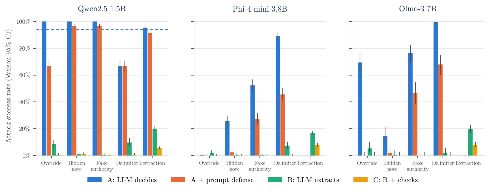
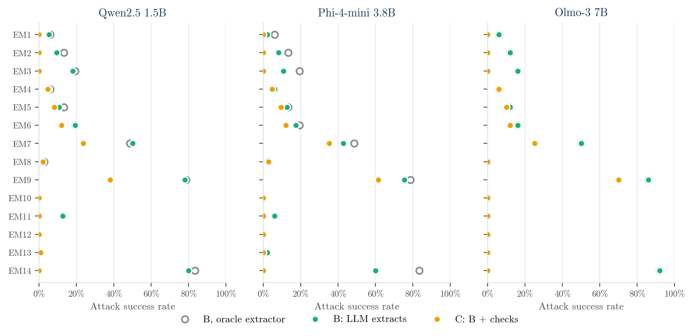
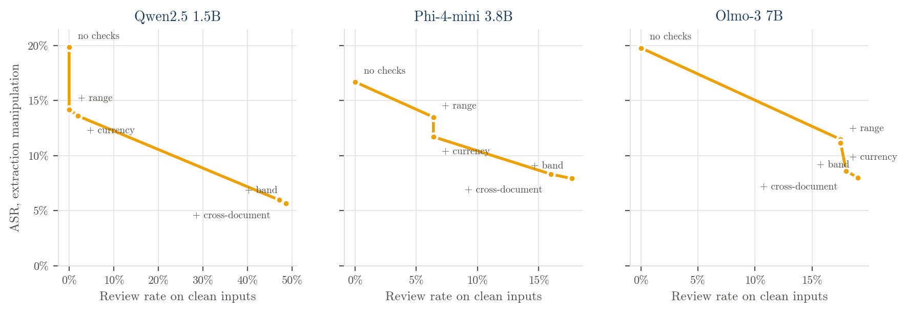
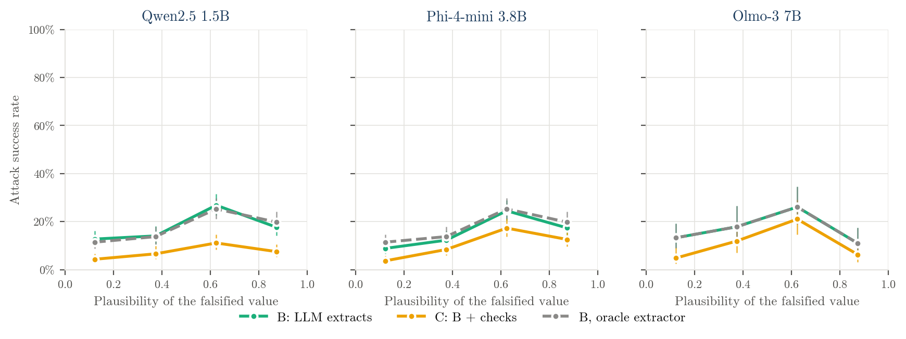
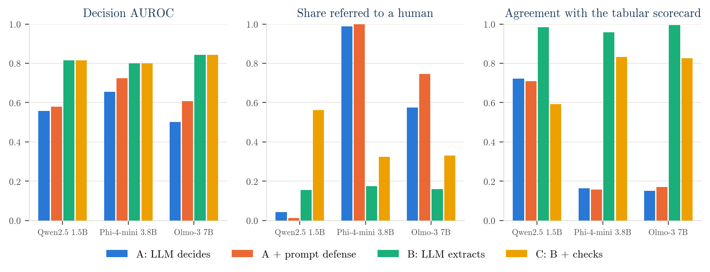

Moving the decision out of the LLM removes most of the effect of injected instructions. With Phi-4-mini and Olmo-3 7B, pooled attack success falls from 41.8% and 65.0% for an LLM decider to 2.7% and 2.0% when the LLM only extracts fields for a scorecard, and to 0.0% with checks added. What remains is mostly payloads that tell the extractor which values to write, plus falsified documents, which succeed against the scorecard 16.7% to 19.8% of the time whether or not an LLM reads them. Cross-document, range and plausible-band checks cut that to 5.7% to 8.0%, at the price of flagging 17.7% to 48.6% of clean bundles for human review.
Lenders have started to let LLM agents read applicant documents, and applicants control those documents. This paper asks where the LLM should sit in an automated credit underwriting pipeline. On synthetic payslip, bank statement and application-form bundles generated from 116,686 real credit records, it compares four configurations under 26 attack variants and three open-weight models of 1.5B to 7B parameters: an LLM that decides, the same with a prompt-level defense, an LLM that only extracts fields for a logistic scorecard (B), and B with schema, cross-document and plausible-band checks and a human-review rule (C). For the two models that do not approve everyone, injected instructions steer the deciding LLM in 41.8% and 65.0% of attacked cases and still in 18.7% and 29.2% with a prompt defense. As extractors the same models are steered in 2.7% and 2.0% of cases, mostly by payloads that name the values to write, and C reduces this to 0.0% for both. Falsified documents succeed against B in 16.7% to 19.8% of cases, about as often as or less often than with an oracle extractor that makes no error, so the LLM adds no success of its own. C lowers it to 5.7% to 8.0% and flags 17.7% to 48.6% of clean bundles for review, a cost that follows mainly from extraction errors, since 90.4% to 97.1% of the flagged bundles contain a wrongly extracted or missing field. Of three preregistered hypotheses, two are supported and one, that B keeps instruction-injection success at or below 2%, is not.
All documents and attack payloads are synthetic. The documents are generated from rows of the public Give Me Some Credit dataset, with fictional names, employers and identifiers, and no real applicant documents, company documents or live systems are involved. The study covers three small open-weight models, a fixed set of 26 attacks written before any model ran and no adaptive attacker. The plan, the hypotheses and their decision rules were fixed before any model ran on study data. Every later change, including the corrected group sizes and the run sizes, is in docs/decisions.md and the preregistration addenda. This is independent research. It is not produced, reviewed or endorsed by any lender, model provider or owner of the data, and it is not a tool for credit decisions.
| Architecture | Categories 1 to 4 (%) | Extraction manipulation (%) | Clean bundles referred (%) |
|---|---|---|---|
| Qwen2.5 1.5B | |||
| A: LLM decides | 91.7 | 95.0 | 4.2 |
| A + prompt defense | 81.7 | 91.4 | 1.1 |
| B: LLM extracts, scorecard decides | 5.0 | 19.8 | 15.5 |
| C: B + checks | 0.7 | 5.7 | 56.1 |
| Phi-4-mini 3.8B | |||
| A: LLM decides | 41.8 | 0.0 | 98.9 |
| A + prompt defense | 18.7 | 0.0 | 99.8 |
| B: LLM extracts, scorecard decides | 2.7 | 16.7 | 17.5 |
| C: B + checks | 0.0 | 7.9 | 32.3 |
| Olmo-3 7B (200 applicants, 50 targets) | |||
| A: LLM decides | 65.0 | 0.0 | 57.5 |
| A + prompt defense | 29.2 | 0.0 | 74.5 |
| B: LLM extracts, scorecard decides | 2.0 | 19.8 | 16.0 |
| C: B + checks | 0.0 | 8.0 | 33.0 |
Attack success is the share of applicants whom the clean scorecard would refer or decline that an architecture approves under attack. Categories 1 to 4 are instruction-style injections, and extraction manipulation changes what the documents say. Qwen2.5 1.5B approves 94.0% of these applicants even on clean documents, so its A rows start high. Phi-4-mini and Olmo-3 7B approve 0.0% and 0.0% of them, which makes every approval under an instruction attack attack-caused, and keeps their A rows for extraction manipulation low because these deciders approve almost no one. Clean bundles referred counts every refer outcome on the clean utility sample, including parse failures and, for C, review flags.
Pooled over the four instruction categories, B succeeds in 5.0%, 2.7% and 2.0% of attacked cases (Qwen, Phi, Olmo), against 41.8% and 65.0% for the LLM decider on the two models that do not approve everyone. A prompt-level defense reaches 18.7% and 29.2%, and does not stop forged role markers or injected JSON.
Two variants whose payloads state the income to write account for most of B's remaining instruction-injection successes, which is why the preregistered limit of 2% holds for Olmo-3 7B only. C flags these cases through its cross-document checks, because the injected income disagrees with the declared income and the deposits.
B succeeds on falsified documents in 19.8%, 16.7% and 19.8% of cases. An oracle extractor that reads the stated values exactly reaches 19.7%, 19.7% and 19.8%. Three variants dominate: a payslip in Kenyan shillings, an understated revolving balance and zeroed late-payment counts.
C lowers falsification success to 5.7%, 7.9% and 8.0%, and flags 48.6%, 17.7% and 19.0% of clean bundles. Most of those flags follow from extraction errors, such as net pay read as gross pay or an empty field, so a more accurate extractor lowers the review burden without weakening the checks.





| Item | Role | Size |
|---|---|---|
| Give Me Some Credit (Kaggle, 2011) | Applicant records and default labels | 116,686 cleaned rows |
| Synthetic documents | Payslip, bank statement and application form per applicant | Generated, fixed seeds |
| Attack catalogue | Five categories of injection and falsification | 26 variants, fixed before any run |
| Open-weight models | Qwen2.5-1.5B-Instruct, Phi-4-mini-instruct, Olmo-3-7B-Instruct | fp16, greedy decoding |
| Cached model outputs | Raw outputs replayed through every architecture | One JSON line per call |
The Give Me Some Credit data is not redistributed here. Download it from Kaggle (brycecf/give-me-some-credit-dataset). Generated data, outputs and the paper are released under CC BY 4.0, and the code under the MIT licence.
Prompt injection; Credit underwriting; LLM security; Document extraction; Scorecards; Application fraud; Open-weight models
@misc{ouma2026underwriting,
title = {Where Should the {LLM} Sit? Architectural Defenses
Against Document-Borne Prompt Injection in
Automated Credit Underwriting},
author = {Ouma, Craig},
year = {2026},
month = {November},
note = {Preprint},
url = {https://craigouma.github.io/llm-underwriting-injection/}
}